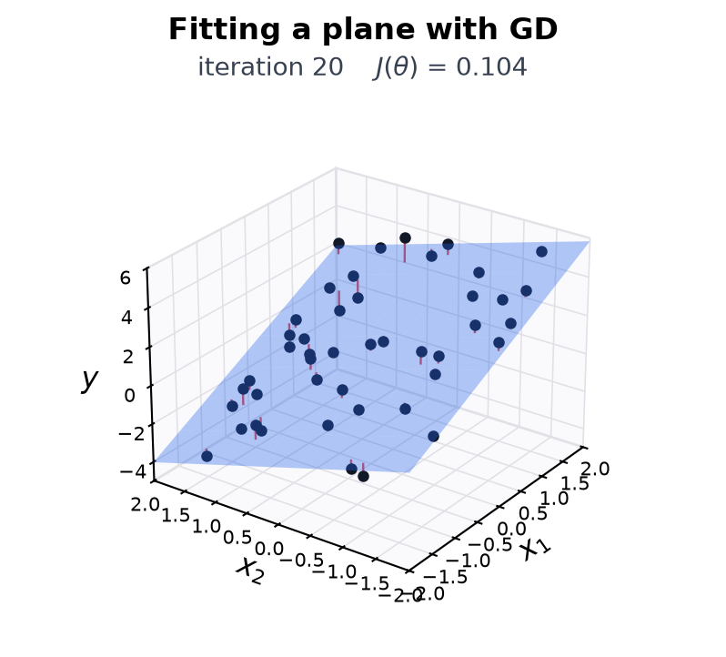
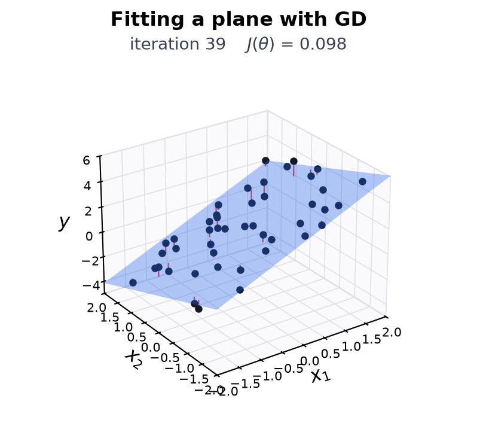
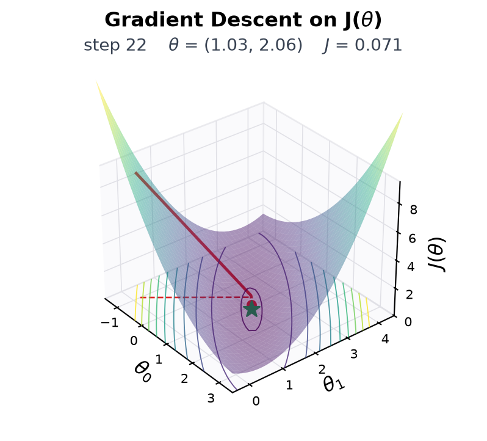
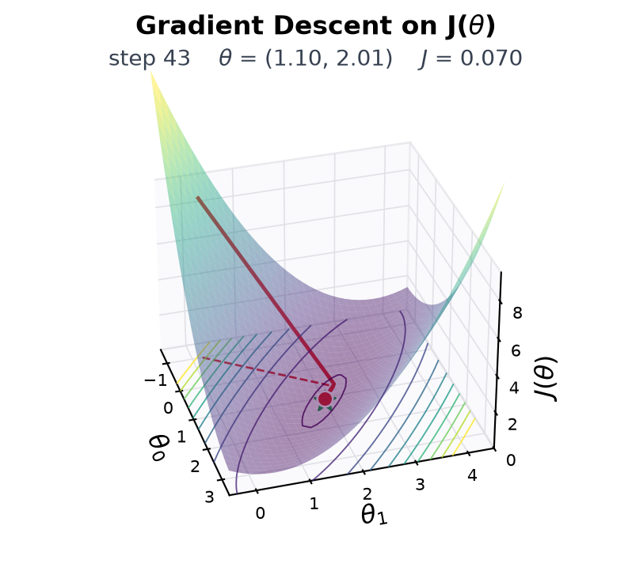
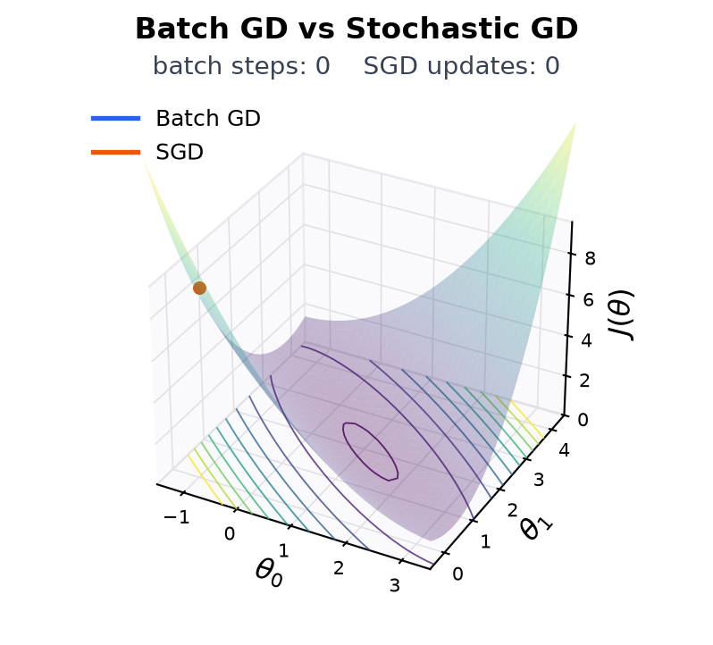
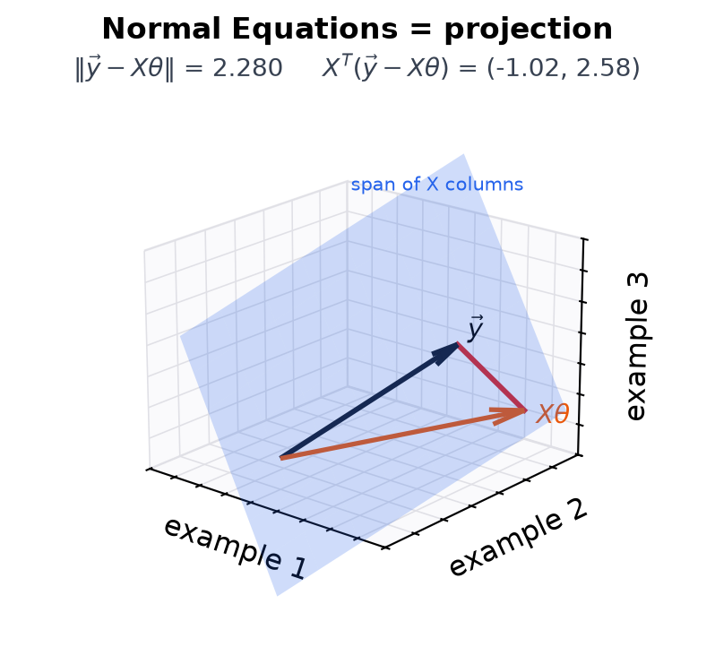
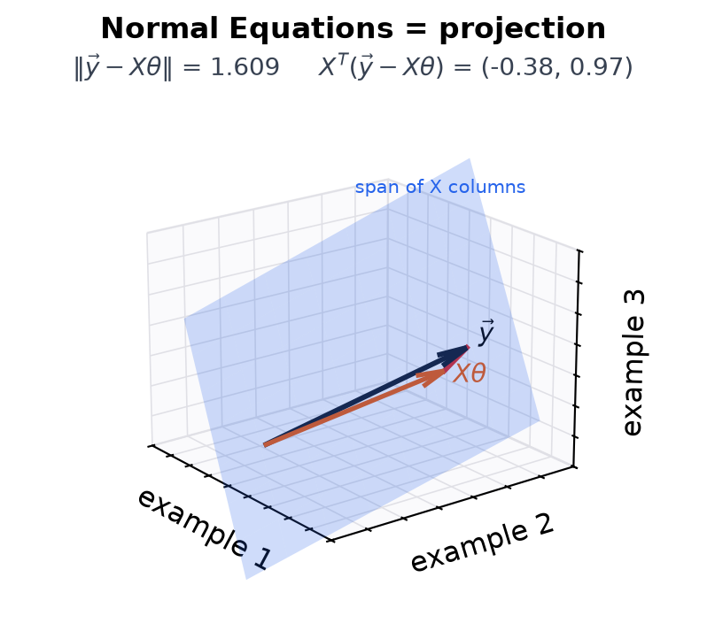

Supervised Learning Setup और Linear Regression
Theory
इस lecture में: Supervised Learning का पूरा ढाँचा (training set, hypothesis, cost function), Linear Regression, Gradient Descent (Batch और Stochastic), Normal Equations, और यह कि Least Squares असल में Maximum Likelihood क्यों है।
1. एक line में idea
हमारे पास कुछ उदाहरण हैं जिनमें input \(x\) और सही जवाब \(y\) दोनों दिए हैं। हमें ऐसा function \(h\) सीखना है जो नए \(x\) के लिए \(y\) का अच्छा अंदाज़ा लगा सके। जब \(y\) एक continuous संख्या हो (जैसे घर की कीमत), तो इस problem को regression कहते हैं। जब \(y\) कुछ गिनी-चुनी categories में से एक हो (जैसे spam / not spam), तो इसे classification कहते हैं।
Linear Regression सबसे सरल regression model है: हम मान लेते हैं कि \(y\) लगभग \(x\) के features का एक weighted sum है, और फिर data से सबसे अच्छे weights ढूँढते हैं।
2. Setup और Notation
| Symbol | मतलब |
|---|---|
| \(x^{(i)}\) | \(i\)-वें training example के input features (एक vector) |
| \(y^{(i)}\) | \(i\)-वें example का target (सही जवाब) |
| \((x^{(i)}, y^{(i)})\) | एक training example |
| \(m\) | training examples की संख्या |
| \(n\) | features की संख्या |
| \(\theta\) | parameters (weights), जिन्हें हमें सीखना है |
| \(h_\theta(x)\) | hypothesis, यानी model का prediction |
Linear Regression में hypothesis यह है (हम \(x_0 = 1\) मान लेते हैं ताकि intercept \(\theta_0\) भी उसी formula में आ जाए):
\[h_\theta(x) = \theta_0 + \theta_1 x_1 + \dots + \theta_n x_n = \sum_{j=0}^{n} \theta_j x_j = \theta^T x\]
एक feature हो तो यह एक line है, दो features हों तो एक plane, और ज़्यादा हों तो hyperplane।
3. Cost Function
\(\theta\) कितना अच्छा है, यह नापने के लिए हम देखते हैं कि predictions असली \(y\) से कितनी दूर हैं। इसी दूरी के squares का जोड़ cost function है:
\[J(\theta) = \frac{1}{2} \sum_{i=1}^{m} \left( h_\theta(x^{(i)}) - y^{(i)} \right)^2\]
\(J(\theta)\) जितना छोटा, fit उतना अच्छा। Linear Regression के लिए \(J\) एक convex कटोरे (bowl) जैसा होता है, इसलिए इसका सिर्फ़ एक ही global minimum है और कोई local minimum नहीं।
4. Gradient Descent
कटोरे की तली तक पहुँचने का तरीका: जहाँ खड़े हैं वहाँ से सबसे तेज़ ढलान की दिशा में छोटा कदम लें, और यही बार-बार दोहराएँ।
\[\theta_j := \theta_j - \alpha \frac{\partial}{\partial \theta_j} J(\theta)\]
यहाँ \(\alpha\) learning rate है, यानी कदम का size। एक example के लिए derivative निकालें तो:
\[\frac{\partial}{\partial \theta_j} \frac{1}{2}\left(h_\theta(x) - y\right)^2 = \left(h_\theta(x) - y\right) x_j\]
इससे LMS (Least Mean Squares) update rule मिलता है, जिसे Widrow-Hoff rule भी कहते हैं:
\[\theta_j := \theta_j + \alpha \left( y^{(i)} - h_\theta(x^{(i)}) \right) x_j^{(i)}\]
ध्यान दें कि update error \((y - h_\theta(x))\) के अनुपात में है: prediction लगभग सही हो तो बदलाव छोटा, बहुत गलत हो तो बदलाव बड़ा।
Batch बनाम Stochastic
- Batch Gradient Descent: हर step में पूरे training set का जोड़ लेते हैं: \(\theta_j := \theta_j + \alpha \sum_{i=1}^{m} (y^{(i)} - h_\theta(x^{(i)}))\, x_j^{(i)}\)। रास्ता smooth होता है, पर \(m\) बड़ा हो तो हर step महँगा पड़ता है।
- Stochastic Gradient Descent (SGD): हर step में सिर्फ़ एक example देखकर update कर देते हैं। रास्ता टेढ़ा-मेढ़ा (noisy) होता है और minimum के आस-पास घूमता रहता है, पर बड़े data पर यह बहुत जल्दी अच्छे \(\theta\) के पास पहुँच जाता है।
Learning rate का असर
- \(\alpha\) बहुत छोटा: सही दिशा, पर बहुत धीमा।
- \(\alpha\) ठीक-ठाक: तेज़ी से minimum तक।
- \(\alpha\) बहुत बड़ा: कदम minimum के पार निकल जाते हैं, \(J\) घटने की जगह उछलता है या बढ़ता ही जाता है (diverge)।
5. Normal Equations
Linear Regression में minimum सीधे formula से भी निकल सकता है। सारे examples को matrix \(X\) (हर row एक \(x^{(i)T}\)) और vector \(\vec{y}\) में रखें। तब
\[J(\theta) = \frac{1}{2} (X\theta - \vec{y})^T (X\theta - \vec{y}), \qquad \nabla_\theta J(\theta) = X^T X \theta - X^T \vec{y}\]
Gradient को zero रखने पर Normal Equations मिलती हैं:
\[X^T X \theta = X^T \vec{y} \quad\Longrightarrow\quad \theta = (X^T X)^{-1} X^T \vec{y}\]
Geometric मतलब: \(X\theta\) हमेशा \(X\) के columns के span (एक plane) में रहता है। सबसे अच्छा \(\theta\) वह है जिसके लिए \(X\theta\), \(\vec{y}\) का उस plane पर projection हो। तब residual \(\vec{y} - X\theta\) plane के perpendicular होता है, यानी \(X^T(\vec{y} - X\theta) = 0\)। यही Normal Equation है।
| Gradient Descent | Normal Equations | |
|---|---|---|
| \(\alpha\) चुनना | ज़रूरी | नहीं |
| Iterations | बहुत | एक ही बार में |
| \(n\) बहुत बड़ा हो | ठीक चलता है | \((X^TX)^{-1}\) लगभग \(O(n^3)\), धीमा |
| दूसरे models | लगभग हर जगह चलता है | सिर्फ़ Linear Regression जैसे cases |
6. Probabilistic Interpretation: squared error ही क्यों?
मान लीजिए \(y^{(i)} = \theta^T x^{(i)} + \epsilon^{(i)}\), जहाँ noise \(\epsilon^{(i)} \sim \mathcal{N}(0, \sigma^2)\) है और सारे examples i.i.d. हैं। तब
\[p(y^{(i)} \mid x^{(i)}; \theta) = \frac{1}{\sqrt{2\pi}\,\sigma} \exp\left( -\frac{(y^{(i)} - \theta^T x^{(i)})^2}{2\sigma^2} \right)\]
पूरे data का log-likelihood:
\[\ell(\theta) = \sum_{i=1}^{m} \log p(y^{(i)} \mid x^{(i)}; \theta) = m \log \frac{1}{\sqrt{2\pi}\,\sigma} - \frac{1}{\sigma^2} \cdot \frac{1}{2} \sum_{i=1}^{m} \left(y^{(i)} - \theta^T x^{(i)}\right)^2\]
\(\ell(\theta)\) को maximize करना ठीक वही है जो \(J(\theta)\) को minimize करना। यानी Gaussian noise की assumption के साथ, Least Squares ही Maximum Likelihood Estimate है। जवाब \(\sigma^2\) पर निर्भर नहीं करता।
7. Practical बातें और आम गलतियाँ
- Feature scaling: अगर एक feature हज़ारों में है और दूसरा इकाइयों में, तो \(J\) का कटोरा बहुत लंबा-पतला हो जाता है और Gradient Descent zig-zag करता है। हर feature को mean 0 और standard deviation 1 पर ले आएँ।
- \(J\) को हर iteration पर plot करें: सही \(\alpha\) पर \(J\) हर step में घटना चाहिए। बढ़ रहा है तो \(\alpha\) छोटा करें।
- \(X^TX\) invertible न हो (जैसे duplicate features या \(m < n\)): pseudo-inverse या regularization लगाएँ (Lecture 8)।
- Linear का मतलब parameters में linear: \(x^2\), \(\log x\) जैसे नए features जोड़कर यही model curves भी fit कर सकता है।
8. खुद से पूछें
- \(J(\theta)\) में \(\frac{1}{2}\) क्यों रखा गया है? (संकेत: derivative लेते समय क्या होता है?)
- अगर सारे examples के लिए \(h_\theta(x^{(i)}) = y^{(i)}\) हो जाए, तो LMS update क्या करेगा?
- SGD minimum पर पूरी तरह रुकता क्यों नहीं, और इसे रोकने के लिए \(\alpha\) के साथ क्या किया जा सकता है?
3D Animations



क्या देखें: दो features \(x_1, x_2\) और target \(y\) वाले data points 3D में बिखरे हैं। नीला plane hypothesis \(h_\theta(x) = \theta_0 + \theta_1 x_1 + \theta_2 x_2\) है। शुरू में \(\theta = 0\) है, इसलिए plane सपाट है। हर iteration में Gradient Descent plane को थोड़ा घुमाता और उठाता है। लाल रेखाएँ residuals (errors) हैं: देखिए कैसे वे छोटी होती जाती हैं और \(J(\theta)\) गिरता जाता है।



क्या देखें: अब हम data की जगह parameter space देख रहे हैं: ज़मीन पर \(\theta_0\) और \(\theta_1\), और ऊँचाई \(J(\theta)\)। Surface एक convex कटोरा है। लाल गेंद वर्तमान \(\theta\) है। हर step में वह सबसे तेज़ ढलान की दिशा में चलती है: पहले तेज़ी से घाटी में उतरती है, फिर लंबी-पतली घाटी के साथ धीरे-धीरे minimum (हरा तारा) की ओर बढ़ती है। नीचे फ़र्श पर contours और रास्ते की परछाईं भी दिख रही है।


क्या देखें: एक ही जगह से तीन गेंदें छोड़ी गई हैं, बस \(\alpha\) अलग है। नीली (\(\alpha\) छोटा) सही दिशा में है पर रेंग रही है। हरी (\(\alpha\) ठीक) जल्दी तली तक पहुँच जाती है। लाल (\(\alpha\) बड़ा) हर कदम में घाटी के पार कूद जाती है और दीवारों के बीच zig-zag करती रहती है। \(\alpha\) इससे थोड़ा और बड़ा हो तो यही उछाल हर step में बढ़ेगा और algorithm diverge कर जाएगा।



क्या देखें: नीला रास्ता Batch Gradient Descent है: हर step में पूरे data का gradient, इसलिए रास्ता smooth है। नारंगी रास्ता SGD है: हर update सिर्फ़ एक random example से, इसलिए रास्ता लड़खड़ाता है। फिर भी वह उसी घाटी में पहुँचता है और अंत में minimum के आस-पास मँडराता रहता है, पूरी तरह रुकता नहीं। यहाँ एक frame में Batch का एक step और SGD के चार सस्ते updates दिखाए गए हैं।



क्या देखें: यहाँ axes तीन training examples हैं (\(m=3\)), इसलिए \(\vec{y}\) 3D में एक vector है (काला)। नीला plane \(X\) के दो columns का span है: \(X\theta\) हमेशा इसी plane में रहता है। नारंगी बिंदु \(X\theta\) plane पर चलते हुए उस जगह पहुँचता है जहाँ लाल residual \(\vec{y} - X\theta\) सबसे छोटा है। उस पल residual plane के ठीक perpendicular हो जाता है: \(X^T(\vec{y} - X\theta) = 0\)। यही Normal Equation है।
Python Example
इसे खुद चलाएँ: cs229_hindi/.venv/bin/python cs229_hindi/chapters/L02_linear_regression/example.py
"""Lecture 2 example: Linear Regression शुरू से (सिर्फ़ NumPy). घर के size और bedrooms से कीमत का अंदाज़ा। तीन तरीकों से theta निकालते हैं: Batch Gradient Descent, Stochastic Gradient Descent, और Normal Equations। """ import numpy as np import matplotlib.pyplot as plt rng = np.random.default_rng(42) # ---------- 1. Data बनाएँ: price = 50 + 0.12*size + 15*bedrooms + noise ---------- m = 200 size = rng.uniform(500, 3500, m) # square feet bedrooms = rng.integers(1, 6, m).astype(float) price = 50 + 0.12 * size + 15 * bedrooms + rng.normal(0, 25, m) # हज़ार dollars में # ---------- 2. Train / test split ---------- idx = rng.permutation(m) train, test = idx[:160], idx[160:] # ---------- 3. Feature scaling (mean 0, std 1), सिर्फ़ training data के statistics से ---------- features = np.c_[size, bedrooms] mu, sigma = features[train].mean(axis=0), features[train].std(axis=0) def design_matrix(f): """Scale करें और x0 = 1 वाला column जोड़ें।""" return np.c_[np.ones(len(f)), (f - mu) / sigma] X_train, y_train = design_matrix(features[train]), price[train] X_test, y_test = design_matrix(features[test]), price[test] def cost(theta, X, y): """J(theta) = (1/2m) * sum (h(x) - y)^2""" return 0.5 * np.mean((X @ theta - y) ** 2) # ---------- 4. Batch Gradient Descent ---------- def batch_gd(X, y, alpha=0.1, iters=300): theta = np.zeros(X.shape[1]) history = [] for _ in range(iters): gradient = X.T @ (X @ theta - y) / len(y) # पूरे data का gradient theta -= alpha * gradient history.append(cost(theta, X, y)) return theta, history # ---------- 5. Stochastic Gradient Descent (LMS rule, एक बार में एक example) ---------- def sgd(X, y, alpha=0.01, epochs=20): theta = np.zeros(X.shape[1]) history = [] for _ in range(epochs): for i in rng.permutation(len(y)): error = y[i] - X[i] @ theta theta += alpha * error * X[i] # theta_j := theta_j + alpha * error * x_j history.append(cost(theta, X, y)) return theta, history # ---------- 6. Normal Equations: X^T X theta = X^T y ---------- def normal_equations(X, y): return np.linalg.solve(X.T @ X, X.T @ y) theta_gd, hist_gd = batch_gd(X_train, y_train) theta_sgd, hist_sgd = sgd(X_train, y_train) theta_ne = normal_equations(X_train, y_train) def r2(theta, X, y): return 1 - np.sum((y - X @ theta) ** 2) / np.sum((y - y.mean()) ** 2) print("Method theta0 theta1 theta2 train J test R^2") for name, th in [("Batch GD", theta_gd), ("SGD", theta_sgd), ("Normal Equations", theta_ne)]: print(f"{name:<17} {th[0]:8.2f} {th[1]:8.2f} {th[2]:8.2f} {cost(th, X_train, y_train):9.2f} " f"{r2(th, X_test, y_test):10.4f}") # Scaled theta को वापस असली units में बदलें ताकि मतलब समझ आए slope = theta_ne[1:] / sigma intercept = theta_ne[0] - np.sum(theta_ne[1:] * mu / sigma) print(f"\nअसली units में: price = {intercept:.1f} + {slope[0]:.3f}*size + {slope[1]:.1f}*bedrooms") print("(data बनाते समय सच यह था: price = 50 + 0.120*size + 15*bedrooms)") new_house = np.array([[2000.0, 3.0]]) print(f"\n2000 sq ft, 3 bedrooms वाले घर का prediction: {(design_matrix(new_house) @ theta_ne)[0]:.1f} हज़ार") # ---------- 7. Learning rate का असर ---------- print("\nअलग-अलग alpha पर 50 iterations के बाद J:") for alpha in (0.001, 0.01, 0.1, 1.0, 2.1): _, h = batch_gd(X_train, y_train, alpha=alpha, iters=50) note = " <- diverge!" if h[-1] > h[0] else "" print(f" alpha = {alpha:<6} J = {h[-1]:.4g}{note}") # ---------- 8. Plots ---------- fig, axes = plt.subplots(1, 2, figsize=(10, 4)) axes[0].plot(hist_gd, label="Batch GD (per iteration)") axes[0].plot(np.linspace(0, len(hist_gd), len(hist_sgd)), hist_sgd, "o-", ms=3, label="SGD (per epoch, rescaled)") axes[0].axhline(cost(theta_ne, X_train, y_train), color="gray", ls="--", label="Normal Equations") axes[0].set(yscale="log", xlabel="iteration", ylabel="J(theta)", title="Cost during training") axes[0].legend() pred = X_test @ theta_ne axes[1].scatter(y_test, pred, s=18) lims = [y_test.min(), y_test.max()] axes[1].plot(lims, lims, "r--", label="perfect prediction") axes[1].set(xlabel="actual price", ylabel="predicted price", title="Test set: predicted vs actual") axes[1].legend() fig.tight_layout() fig.savefig("result.png", dpi=130)
Method theta0 theta1 theta2 train J test R^2 Batch GD 329.80 101.82 23.79 321.58 0.9431 SGD 329.88 101.20 25.90 324.09 0.9429 Normal Equations 329.80 101.82 23.79 321.58 0.9431 असली units में: price = 49.0 + 0.120*size + 15.6*bedrooms (data बनाते समय सच यह था: price = 50 + 0.120*size + 15*bedrooms) 2000 sq ft, 3 bedrooms वाले घर का prediction: 336.8 हज़ार अलग-अलग alpha पर 50 iterations के बाद J: alpha = 0.001 J = 5.43e+04 alpha = 0.01 J = 2.222e+04 alpha = 0.1 J = 323.3 alpha = 1.0 J = 321.6 alpha = 2.1 J = 6.684e+13 <- diverge!